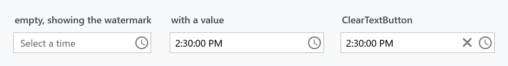
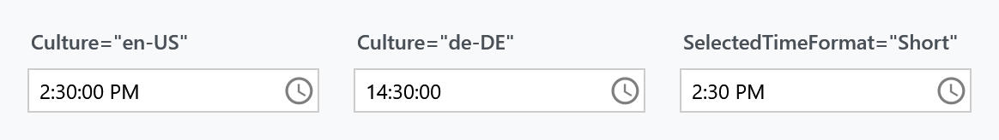
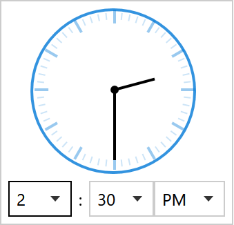
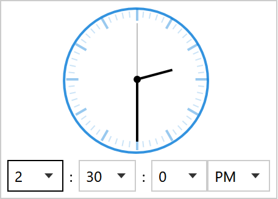
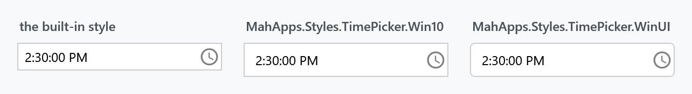
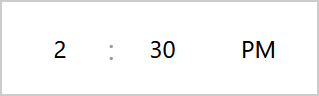
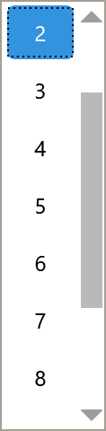

TimePicker is a text field with a drop-down for picking a time. It is DateTimePicker without the calendar half — both derive from TimePickerBase and share one control template.

<mah:TimePicker Width="170" SelectedDateTime="{Binding Departure}" />
How it differs from DateTimePicker
Almost nothing separates the two, which is worth knowing because everything on the DateTimePicker page applies here as well.
IsDatePickerVisible |
TimePicker's constructor sets it to False, and the shared template shows the calendar only when it is True |
| the drop-down button | a clock glyph instead of a calendar one, through DatePickerHelper.DropDownButtonContent |
| the watermark | Select a time instead of Select a date |
| typing into the field | parsed as a time; the date part of SelectedDateTime is kept |
IsDatePickerVisible is a read-only dependency property with a protected setter, so you cannot turn the calendar back on from XAML. Use a DateTimePicker if you want both halves.
The value
SelectedDateTime is a DateTime?, not a TimeSpan — the same property the DateTimePicker uses. When the user types a time, TimePicker parses it and keeps whatever date was there:
this.SetCurrentValue(SelectedDateTimeProperty,
this.SelectedDateTime.GetValueOrDefault().Date + timeSpan.TimeOfDay);
On an empty picker the date part depends on how the time was set, and the two ways disagree.
Typing a time keeps SelectedDateTime.GetValueOrDefault().Date, which is default(DateTime) when nothing was selected — so typing 14:30 gives you 0001-01-01 14:30.
Picking from the drop-down runs through ClockSelectedTimeChanged instead, which falls back to today — so the same 14:30 gives you today at 14:30.
If your view model wants a time on a particular day, seed SelectedDateTime with that date first, or take .TimeOfDay from what you get back.
DateTimeKind is Unspecified on develop. Before that it depended on the order. Picking the time first produced DateTimeKind.Local, because that path fell back to DateTime.Today, while the calendar and the text field produced Unspecified. A view model bound to SelectedDateTime saw two different kinds from one control.
This is not in 2.4.11, nor in the 3.0 release candidate. Fixed for the next release in #4551; all three paths report Unspecified now. The date the drop-down falls back to is unchanged, it is still today.
Format and culture

| Property | Type | Default | |
|---|---|---|---|
SelectedTimeFormat |
TimePickerFormat |
Long |
Long shows seconds, Short does not |
Culture |
CultureInfo |
null |
formatting and the twelve- or twenty-four-hour clock |
IsReadOnly |
bool |
False |
The default is Long, which is why an untouched picker already shows 2:30:00 PM rather than 2:30 PM.
With no Culture the control follows the thread's culture, and Language changes are watched too. de-DE gives a twenty-four-hour clock and drops the AM/PM list from the drop-down.
The drop-down

| Property | Type | Default | |
|---|---|---|---|
IsClockVisible |
bool |
True |
the analogue clock face |
PickerVisibility |
TimePartVisibility |
HourMinute |
which lists appear |
HandVisibility |
TimePartVisibility |
HourMinute |
which hands the clock draws |
IsDropDownOpen |
bool |
False |
TimePartVisibility is a flags enum — Hour, Minute, Second, plus the combinations HourMinute and All. Seconds are off in both places by default, so turning them on takes two properties:
<mah:TimePicker PickerVisibility="All" HandVisibility="All" />

SourceHours, SourceMinutes and SourceSeconds replace what the lists offer — this is how you build a picker that only offers quarter hours:
<mah:TimePicker SourceMinutes="{Binding QuarterHours}" />
Each has a matching HoursItemStringFormat, MinutesItemStringFormat and SecondsItemStringFormat.
Two nicer alternatives
The same two drop-in dictionaries that restyle the DateTimePicker carry a TimePicker style each.

Controls.DateTimePicker.Win10.xaml |
MahApps.Styles.TimePicker.Win10 |
square |
Controls.DateTimePicker.WinUI.xaml |
MahApps.Styles.TimePicker.WinUI |
rounded |
The files are named for the DateTimePicker because they cover both controls. For a TimePicker you only need the one dictionary — the calendar dictionary the DateTimePicker page asks for is used by the DateTimePicker styles alone.
<ResourceDictionary Source="pack://application:,,,/MahApps.Metro;component/Styles/Controls.xaml" />
<ResourceDictionary Source="Styles/Controls.DateTimePicker.WinUI.xaml" />
<Style BasedOn="{StaticResource MahApps.Styles.TimePicker.WinUI}" TargetType="{x:Type mah:TimePicker}" />
What they change
Both switch the analogue clock off, because Fluent has no clock face — the three columns are the whole time selection there:

No chrome, no chevrons, just centred numbers. Open a column and the selected value is an accent-filled pill:

The Win10 variant is the same row; the two only part company inside the open list, where one pill is rounded and the other square. Set IsClockVisible="True" in a derived style to keep the clock.
Reaching those lists at all needs a trick, because they are plain ComboBoxes with no style of their own — see the DateTimePicker page for how Style.Resources scopes an implicit style to one control's drop-down.
The drop-down frame stays square whichever variant you use. PART_PopupBorder in the shared template has no CornerRadius and none of its brushes is a TemplateBinding, so it cannot be reached from the control — tracked as #4582.
Watermark and the clear button
The watermark and the clear button are ordinary TextBoxHelper values:
<mah:TimePicker mah:TextBoxHelper.Watermark="When?"
mah:TextBoxHelper.UseFloatingWatermark="True"
mah:TextBoxHelper.ClearTextButton="True" />
Related
DateTimePicker for date and time together — and for the properties both controls share. DatePicker for the date alone.